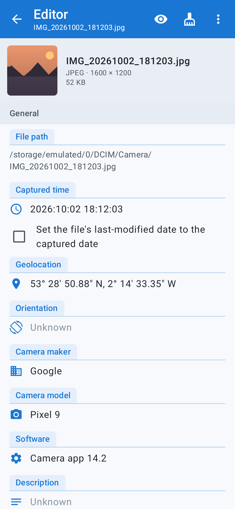
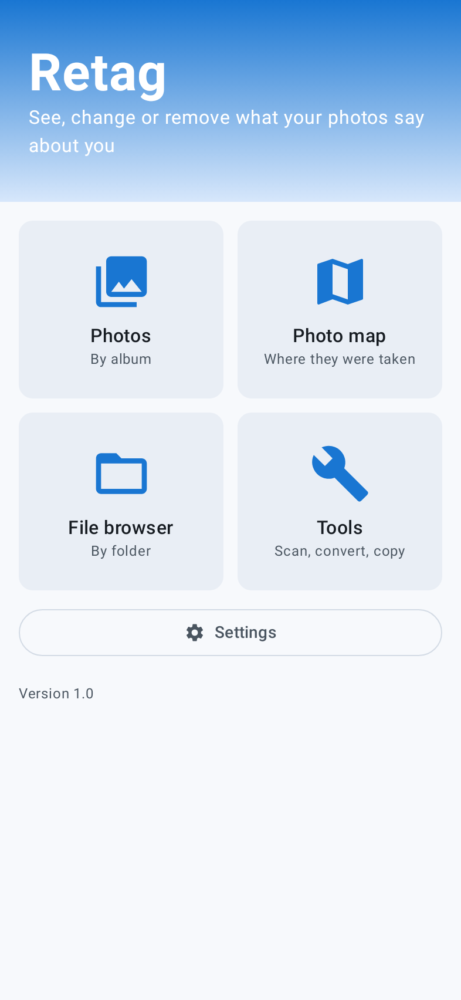
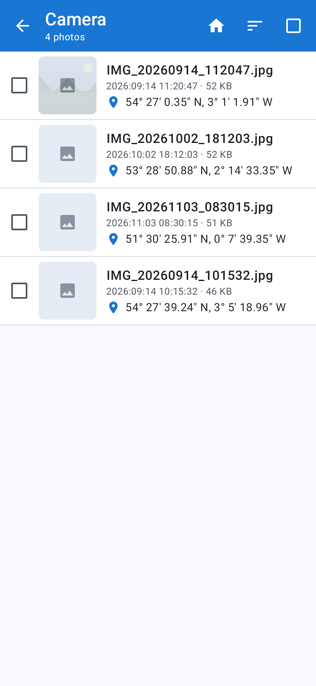
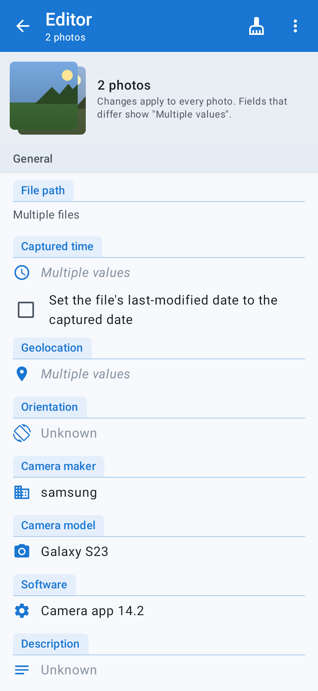
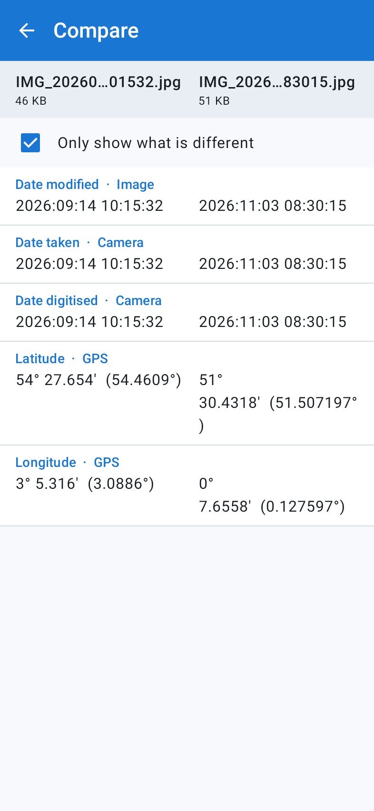
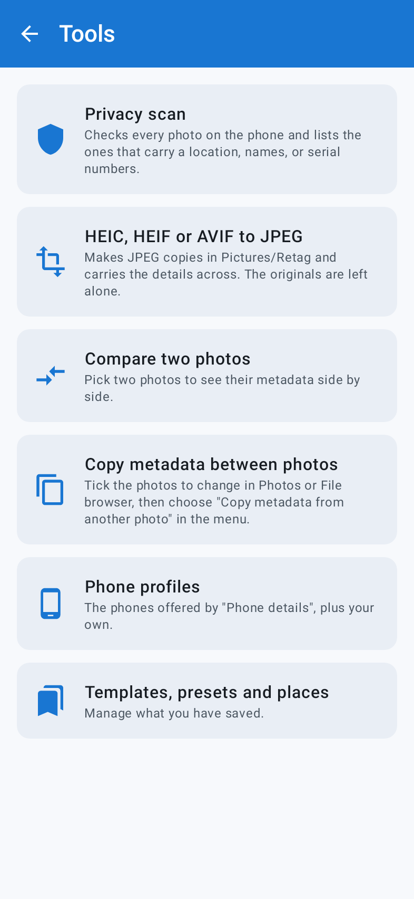
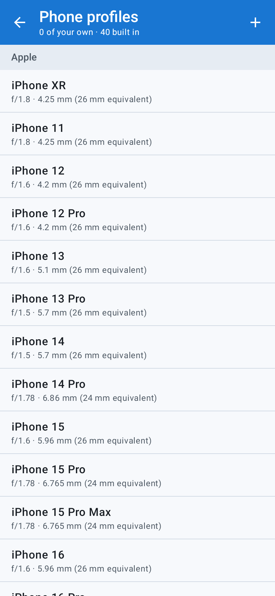
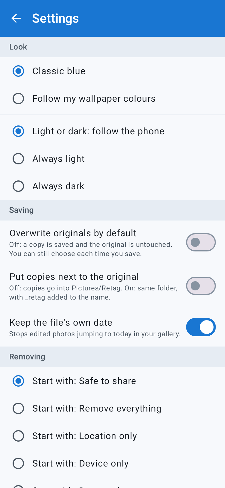

Share the photo, not where you live
Every photo carries hidden details: where it was taken, when, and on which phone. Retag shows them all, lets you change any of them, and takes out the ones you would rather not pass on.
The work is done on your phone, so your photos are never uploaded, and the picture itself is never touched.
Download for AndroidHow to install
- Version 1.0
- Android 11 or later
- 4.5 MB
Free, with nothing to unlock. No adverts, no account with the developer, no tracking. Compare or read the release notes.
Chrome may say the file might be harmful. It shows this for app files that do not come from Google Play. Choose Download anyway.

- No subscriptionEvery feature is in the free app.
- No advertsNone in the app and none on this site.
- No uploadsEverything happens on your phone.
- The picture untouchedOnly the hidden details change.
A look inside
These are the real screens, drawn from the app's own code with made-up photos. Swipe or scroll sideways to see them all.







How it works
There is nothing to buy and no account to make. Retag reads and writes the details stored inside the photo file.
Pick photos
From an album, a folder, the photo map, or shared to Retag from another app.
See what they say
Location, dates, camera, lens and more, grouped in plain words.
Change or remove
Edit any detail, or tap Safe to share to take out everything personal, then save a copy or overwrite.
Everything is in, and all of it is free
Nothing below is held back for a paid tier, because there is no paid tier.
Seeing
- Every detail in plain words
- Location, dates, phone, lens, exposure, captions, author and keywords.
- Photo map
- Where your photos were taken, on an OpenStreetMap map.
- Compare
- Two photos side by side, with only the differences if you like.
- Privacy scan
- Lists every photo on the phone that carries a location, names or serial numbers.
Removing
- Safe to share
- One tap removes everything personal.
- Your choice
- Remove everything, location only, device only, dates only, or your own preset.
- Bulk clean
- Clean, edit, rename and export many photos in one go.
- The picture untouched
- Only the details change; the image is not re-saved.
Changing
- Edit anything
- Dates, camera, lens, exposure, captions, author and keywords.
- Set a location
- On a map, by search, by coordinates or from saved places.
- Fix dates
- Shift them, set them from the file name, or match the file date.
- Phone profiles
- Forty built in, plus your own, and templates to copy between photos.
Formats
- Ten formats
- JPEG, PNG, WebP, HEIC, AVIF, TIFF, GIF, DNG, PSD and JPEG XL.
- HEIC to JPEG
- Make JPEG copies that keep the details, leaving the originals alone.
- New-version notice
- Retag tells you when a newer version is out.
Your photos are your business
Nothing is uploaded
Every photo is read and changed on your phone.
No servers
Retag has no accounts and no servers. The developer collects nothing.
No ads, no tracking
There is no advertising, analytics or tracking, in the app or on this site.
Installing and updating
Retag is not on Google Play, so your phone asks a couple of extra questions the first time.
Download the app file
Tap Download on your phone. The file is called Retag.apk and is about 4.5 MB. If Chrome says the file might be harmful, choose Download anyway.
Allow the install
Open the file. The first time, Android asks you to allow your browser to install apps. Allow it, go back and tap Install. If Google Play Protect steps in, choose More details, then Install anyway.
Updating later
Retag tells you when a newer version is out. Install the new file over the old one and everything you have saved is kept.
Version 1.0, released 15 November 2026. See the release notes, or check your download.
Questions
Is Retag really free?
Yes. There is no paid version, no subscription and no adverts, and nothing in the app is locked. See the comparison.
Is Retag on Google Play?
No. Retag is a personal project and is downloaded from this site as an Android app file. It needs Android 11 or later, which covers almost every phone sold in recent years.
Are my photos uploaded anywhere?
No. Retag reads and changes photos on your phone, and it has no servers. It uses the internet only to show the map, to look up a place or a height when you ask it to, and to check for a newer version. The detail is in the privacy policy.
Does Retag change the picture itself?
No. It changes only the details stored alongside the picture. The picture is never recompressed, so nothing is lost in quality. The one exception is the HEIC to JPEG converter, which makes a new JPEG and leaves the original as it was.
What is the difference between Safe to share and Remove everything?
Safe to share removes everything personal but keeps two things a photo needs in order to look right: which way up it is, and its colour profile. Remove everything takes those as well, so a photo taken sideways may then show sideways.
Will my original photo be changed?
Not unless you ask. Retag saves a changed copy in Pictures/Retag and leaves the original alone. A switch in Settings makes it change the original instead, and you can undo that straight afterwards.
Why does Retag ask for access to all files?
Retag changes photo files where they are, in whichever folder they are kept. Android lets an app do that only with this permission. Retag uses it to list your folders and to read and rewrite pictures, and for nothing else.
A photo sent from my gallery shows no location. Why?
Some gallery apps take the location out when they pass a photo to another app. Open the photo from inside Retag instead, using Photos or File browser, and everything in it is shown.
Is there anything Retag cannot remove?
Retag clears what is written in the file around the picture. It does not alter the picture, so anything you can see in it stays, as does any mark woven into the picture itself. HEIC and AVIF files keep some built-in extras, and camera RAW files keep their make and model so that they still open properly. The limits are set out on the compare page.
How do I update Retag?
Retag tells you when it opens if a newer version is out. Download it from this site and install it over the one you have. Your settings, saved places, presets and templates are kept.
Know what your photos say, before you share them
Free, with no adverts and nothing to unlock. Made by the developer of several other free Android apps: see them all.